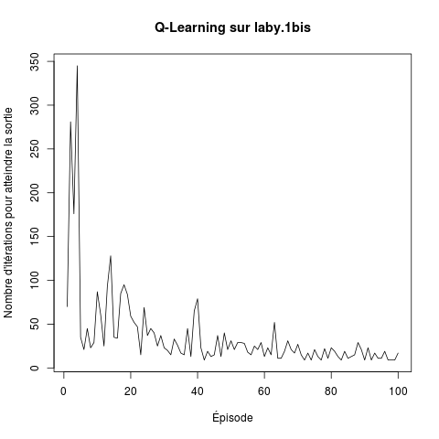
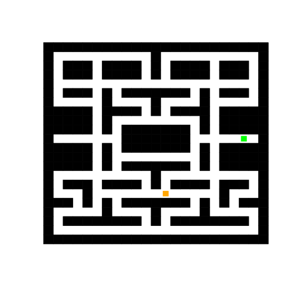

Ce TP consiste à écrire en R un programme qui implante le Q-learning pour apprendre à sortir d'un labyrinthe, puis à expérimenter avec ce programme.
On va s'en tenir à une version élémentaire du Q-Learning. Des tas d'améliorations sont possibles pour en améliorer les performances.
Pour simplifier la réalisation de votre programme, je vous fournis un fichier avec un ensemble de fonctions R qui prennent en charge le labyrinthe et l'interaction entre l'agent et le labyrinthe. Il ne vous reste plus qu'à implanter ce que doit faire l'agent, comment il apprend.
Le contenu de ce fichier est le suivant :
Les états correspondent aux cases des couloirs du labyrinthe. Elles sont numérotés de manière arbitraire. L'une est la case départ, une autre est la case à atteindre.
Dans chaque case, l'agent peut effectuer un mouvement dans une case adjacente (du moment que ce n'est pas un mur).
Dans ce fichier, on a :
Vous n'avez rien d'autre à savoir sur le contenu de ce fichier pour réaliser le TP. Pas la peine de regarder son contenu ; il vous suffit d'utiliser les variables et fonctions que je liste ci-dessus.
Vous prendrez soin de faire un source ("https://philippe-preux.github.io/ensg/miashs/rnf/tps/rl/laby.squelette.R") avant de commencer.
Reste à implanter un Q-Learning qui apprend à sortir de ce labyrinthe.
# initialisations
Q <- matrix (0, nrow = nb.cases, ncol = 4)
nombre.de.pas <- 0
etat.courant <- etat.initial
# effectuer un épisode
while (etat.courant != sortie) {
# choisir l'action à réaliser dans l'état courant
action <- choix.action (etat.courant)
# réaliser cette action et observer l'état suivant et le retour
consequences <- transition (etat.courant, action)
# mettre à jour la qualité du couple (etat.courant, action)
...
etat.courant <- consequences$etat.suivant
nombre.de.pas <- nombre.de.pas + 1
}
Il vous reste à :
Exécuter ce programme et voir au bout de combien de pas il s'arrête.
Quand cela fonctionne, mettez tout cela dans une boucle pour effectuer un certain nombre d'épisodes (par exemple 100). C'est intéressant de stocker le nombre de pas effectués à chaque épisode pour pouvoir tracer une courbe d'apprentissage. Par exemple, j'ai obtenu la courbe suivante :

Quand vous faites plusieurs épisodes, c'est bien de diminuer la valeur de ε après chaque épisode, par exemple en multipliant sa valeur par 0,95 pour le faire diminuer doucement.
| laby.1bis | laby.2bis | laby.4bis | laby.aeac2015 |
|---|---|---|---|
|  |